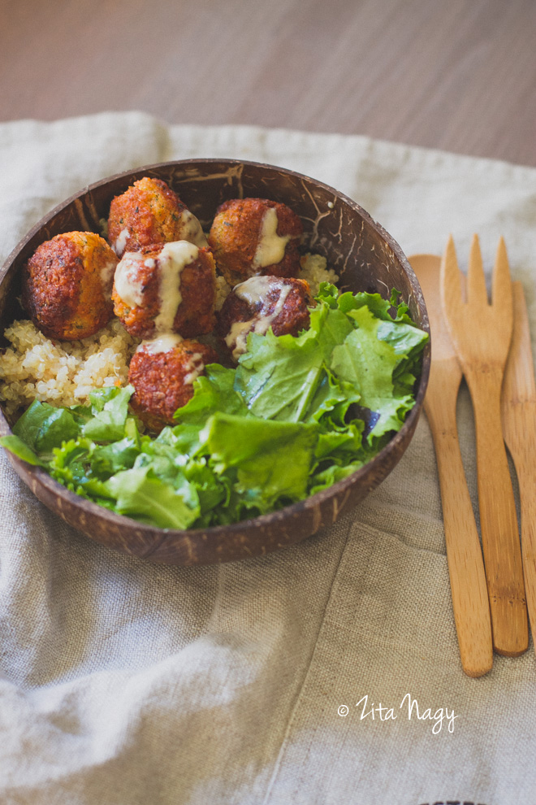

Orders


HOZZÁVALÓK
- 2 bögre vöröslencse, beáztatva 2-3 órára
- 1 kis fej vöröshagyma, meghámozva, kisebb darabokra vágva
- 2 gerezd fokhagyma, meghámozva
- 1 kis ujjnyi darabka gyömbér, meghámozva
- ½ csokor koriander
- 1 teáskanál római kömény
- 1 teáskanál paprika
- 1 teáskanál só
- ½ teáskanál chili pehely (opcionális)
- kókuszzsír, sütéshez
ELKÉSZÍTÉS
- Szűrjük le a beáztatott lencsét.
- Tegyük az összes hozzávalót a leszűrt, nem főtt lencsével késes aprítógépbe.
- Dolgoztassuk a gépet addig, amíg viszonylag sima masszát kapunk (nem baj, ha marad benne egész lencse darab vagy kisebb hagyma darab).
- Tegyük egy tálba a vöröslencsés masszát és formázzunk belőle falatnyi golyókat.
- Közepes láng felett hevítsünk fel egy teflon- vagy kerámiaserpenyőt. Tegyünk bele 3-4 evőkanál kókuszzsírt, majd kezdjük el benne kisütni a fasírtokat.
Sülés közben egy kanál segítségével forgassuk a fasírtokat, hogy minden oldalukon ropogósra süljenek.